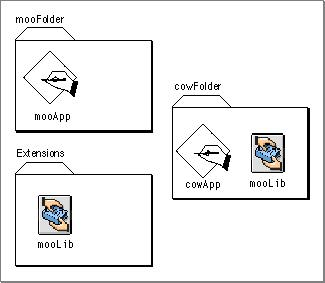

Multiple Fragments With the Same Name
The Code Fragment Manager associates fragments with physical entities (on disk, in memory, and so on) rather than names, even within the same closure. This referencing method means that it is possible to have the Code Fragment Manager prepare two fragments with the same name (which may or may not be identical). For example, consider Figure 3-9, which shows a hard disk that contains two separate copies of the import librarymooLib.Figure 3-9 Identical but independent fragments

When the application
mooApplaunches, the Code Fragment Manager determines thatmooApprequires the import librarymooLiband, following its search path, eventually finds a copy in the default system libraries folder (the Extensions folder, for example). This copy ofmooLibis then bound tomooApp.Later, you decide to launch the application
cowApp, which also depends on the import librarymooLib. However, in searching formooLib, the Code Fragment Manager finds a copy of the library in the folder containingcowApp. Since this location takes precedence over the Extensions folder, the Code Fragment Manager binds this copy ofmooLibtomooApp.The result is that two separate copies of
mooLibexist at the same time. Even though they share the same name (and may in fact be completely identical), they do not share data or code; as far as the Code Fragment Manager is concerned, they are two separate fragments. This can lead to subtle problems when the libraries have specified systemwide sharing of data. For example, even if both copies ofmooLibspecified systemwide data sharing, they would not share global data with each other. On the other hand, allowing multiple copies of a library to exist can be useful for test or debugging purposes. For example,cowAppcould use a test copy ofmooLibwithout disturbing the copy used bymooApp.
© Apple Computer, Inc.
11 MARCH 1997